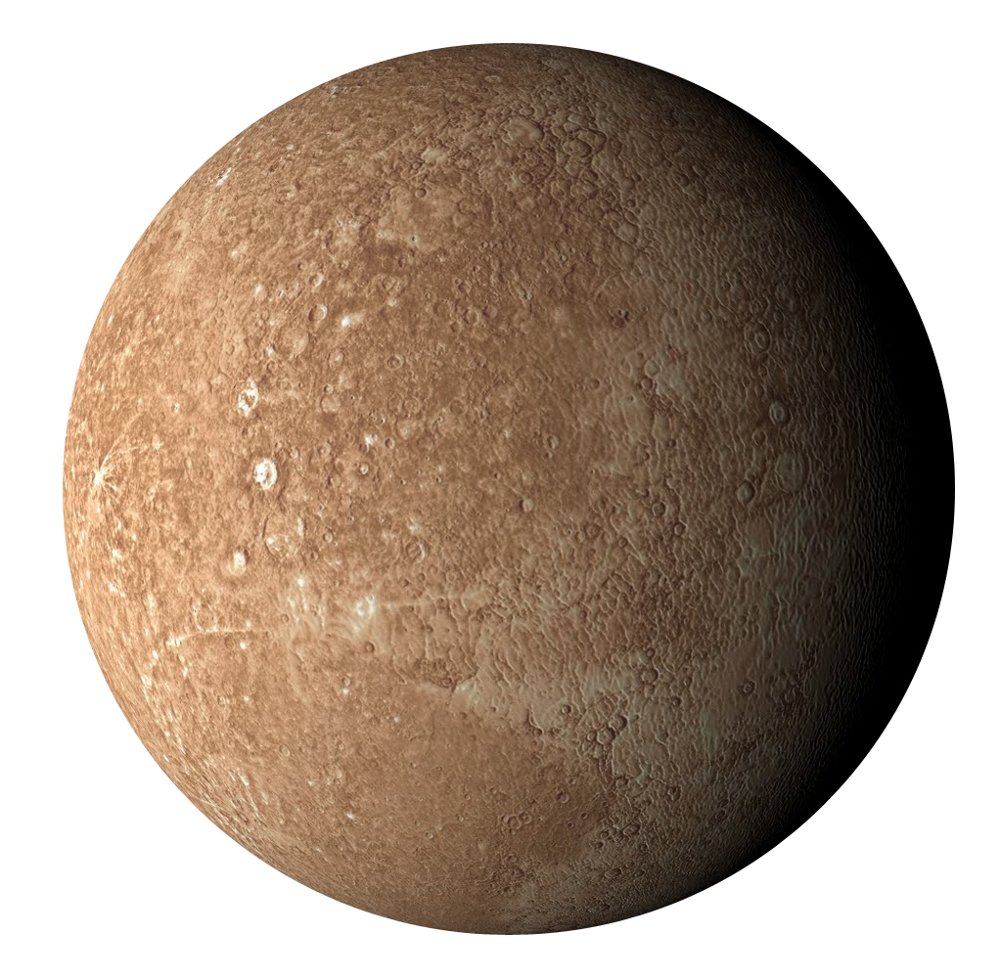
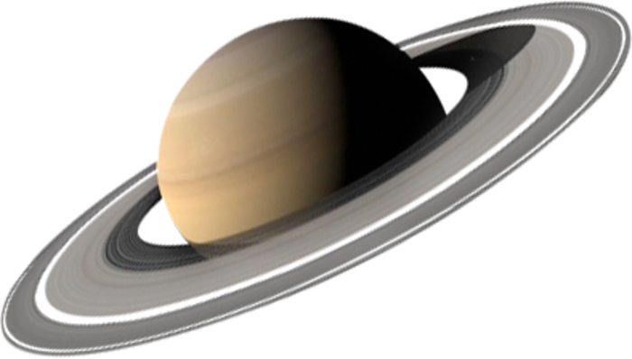

تُعتبر الشمس أكبر جسم داخل النظام الشمسي؛ إذ تشكل نسبة 99% من كتلة المجموعة الشمسية؛ لذا فهي مركز النظام الشمسي الذي تدور حوله مكونات المجموعة الشمسية، ورغم ضخامة الشمس، إلا أنها ليست كبيرة مثل الأنواع الأخرى من النجوم؛ إذ تصنف على أنها نجم قزم، وتوصف على أنها نجم قزم أصفر وكرة ساخنة ملتهبة بفعل الغازات المتوهجة
يعتبر عطارد أصغر كوكب في النظام الشمسي والأقرب إلى الشمس، ويدور حول نفسه ببطء؛ إذ يستغرق 59 يومًا أرضيًا، أما بالنسبة إلى الوقت الذي يستغرقه الدوران حول الشمس فيبلغ 88 يومًا أرضيًا، كما لا يمتلك كوكب عطارد أية أقمار، ولكن له غلاف جوي ضعيف هش يحتوي على الأكسجين، والصوديوم، والهيدروجين، والهيليوم، والبوتاسيوم
هو ثاني أقرب كوكب إلى الشمس، ويستغرق دورانه حول نفسه 243 يومًا أرضيًا، بينما يدور حول الشمس مرة كل 225 يومًا أرضيًا، وغلافه الجوي سميك ويحتوي على ثاني أكسيد الكربون والنيتروجين، والكوكب ليس له حلقات أو أقمار، كما كان كوكب الزهرة في يوم من الأيام كوكبًا توأمًا للأرض، حتى اكتشف علماء الفلك درجة حرارة سطحه البالغة 480 درجة مئوية، أي درجة انصهار الرصاص
يُعرف باسم كوكب الحياة، إذ تُغطي الماء 71% من سطحه، ويحتوي غلافه الجوي على النيتروجين والأكسجين، ويدور حول نفسه مرة واحدة كل يوم واحد أرضي، أي ما يعادل 24 ساعة، ومرة حول الشمس كل 365 يومًا، وله قمر واحد، كما لا يوجد لدى كوكب الأرض حلقات حوله، وتدور العديد من المركبات الفضائية، والأقمار الصناعية حول الأرض لتأمين الاتصالات، ومعلومات الطقس، وغيرها من الخدمات
يُطلق عليه توأم الأرض، يعود ذلك إلى الدراسات المكثفة التي يخضع لها الكوكب التي تُظهر علامات تدفق المياه السائلة على سطحه في الماضي القديم، بالإضافة إلى أن يوم المريخ أطول قليلاً من 24 ساعة أرضية، ويستغرق الكوكب حوالي 687 يومًا من أيام الأرض للدوران حول الشمس، إلا أن غلافه الجوي عبارة عن مزيج هش من ثاني أكسيد الكربون والنيتروجين والأرجون، وله قمران صغيران هما فوبوس وديموس، وليس له أي حلقات
هو أكبر كوكب في نظامنا الشمسي، ويمتاز بسرعته الكبيرة في الدوران حول نفسه؛ إذ يدور حول نفسه مرة كل 10 ساعات أرضية، بينما يستغرق دورانه مرة حول الشمس 12 سنة أرضية، ويتكون غلافه الجوي السميك في الغالب من الهيدروجين والهيليوم، ويقدر حجم نواته بحجم كوكب الأرض تقريبًا، كما يحتوي الكوكب على عشرات الأقمار وبعض الحلقات الباهتة وبقعة حمراء كبيرة، والتي يُعتقد أنها عاصفة مستعرة حدثت منذ 400 عام على الأقل، ويُمكن رؤيتها من خلال التلسكوبات
يشتهر كوكب زحل بحلقاته السبع المقسمة والمحددة جيدًا، بالإضافة إلى فجوات بينها، كما يمتلك الكوكب عشرات الأقمار التي تدور حوله، ويتكون غلافه الجوي في الغالب من غازي الهيدروجين والهيليوم، كما يدور الكوكب حول نفسه بسرعة كبيرة تصل إلى 10.7 ساعات، بينما يستغرق 29 سنة أرضية ليدور مرة واحدة حول الشمس
تم اكتشافه لأول مرة في عام 1781م من قبل ويليام هيرشل، ويستغرق دورانه حول نفسه مدة 17 ساعة، بينما يستغرق دورانه حول الشمس مدة تصل إلى 84 سنة أرضية، ويحتوي على الماء، والميثان، والأمونيا، والهيدروجين، والهيليوم الذين يحيطون بنواة صخرية، ولديه عشرات الأقمار ونظام حلقات خافت
لكوكب الثامن والأبعد عن الشمس، ويحتوي على الماء، والأمونيا، والميثان، والهيدروجين، والهيليوم، ويملك نواة يقدر حجمها بحجم كوكب الأرض، ولديه أكثر من 12 قمرًا، و6 حلقات